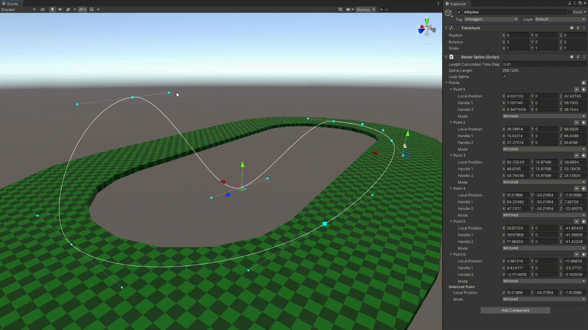

Technical Features
- Kart controller uses unrealistic physics that can be easily tailored to the desired feel
- Drifting is implemented as adjustable curves that vary with kart speed and input direction
- Support for keyboard and gamepad control
- Localized kart gravity allows for vertical, upside down, and otherwise physically impossible track design
- Checkpoint system used for counting laps, returning karts to the track after falling, and generating track splines for AI
- Kart AI that uses spline curves for track traversal
- Spline curve editor tool for tweaking the curve that is generated from the checkpoints
- Minimap generator that uses the track mesh to generate a minimap image during runtime or edit time
Visual Features
- Kart pitches and rolls based on acceleration
- Camera FOV scales with velocity sell the feeling of speed during boosts and jumps
- Speed lines postprocessing effect that scales in intensity with speed
- Minimap icons that follow each kart by converting kart position from world space to minimap space
- The minimap generator sets the color of the minimap based on the angle of the track so that verticality can be understood at a glance
Below is the spline curve editor tool I built to define an ideal path for the AI, each of which is given an accuracy value that controls how well it will follow the curve.
